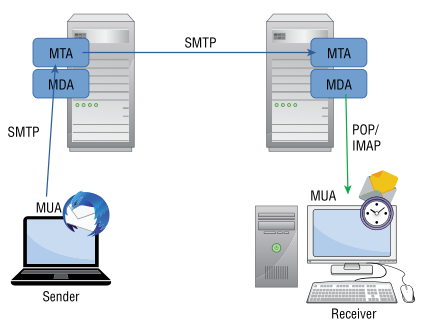

Mail Servers
Email Chain:
1. Write the email in a Mail User Agent(MUA) (e.g.:Google Mail, Microsoft Outlook, Mozilla Thunderbird) that runs on the client
2. Send the message using the protocol Simple Mail Transfer Protocol (SMTP)
3. The message will be received by a Mail Transfer Agent (MTA) (e.g.: Sendmail, Exim) that runs on a remote mail server.
4. The MTA will send the message to another MTA, which will pass the email to a Message Delivery Agent (MDA) (e.g.: Procmail, Maildrop, Dovecot) which job is delivering the email to the recipient’s inbox
◇ MDA and MTA can also be bundled together in a single software (e.g.: Microsoft Exchange, Citadel)
5. Finally the MDA will delivery the email to the recipient’s mailbox
6. To access to the mailbox the recipient’s MUA have to use the protocols: Post Office Protocol (POP) or Internet Message Access Protocol (IMAP)
Simple Mail Transfer Protocol (SMTP)It is defined in:
• RFC 821: from here we can understand the history behind the SMTP
• RFC 5321
SMTP is an
application layer protocol in the Open Systems Interconnection (OSI) model. SMTP dictate how messages are sent from MUAs (sender) to MTAs (server)
Usually SMTP work on ports:
◇ 25/TCP: does not offer encryption of data
◇ 587/TCP: used for sending encrypted emails
Bibliography:
• “Hands on Hacking: Become an Expert at Next Gen Penetration Testing and Purple Teaming” Matthew Hickey, Jennifer Arcuri